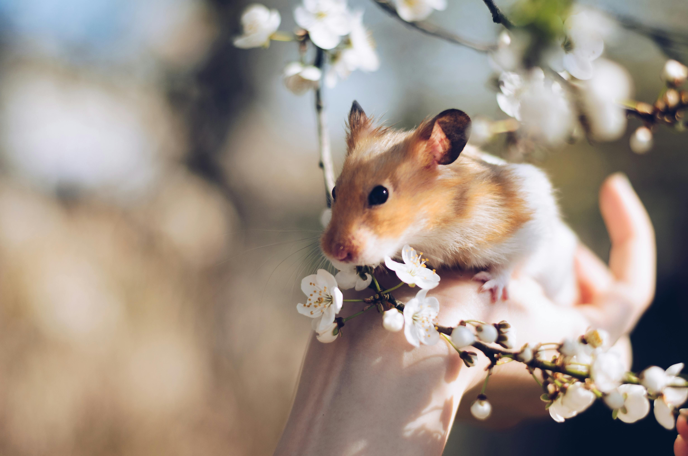
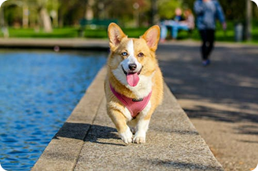
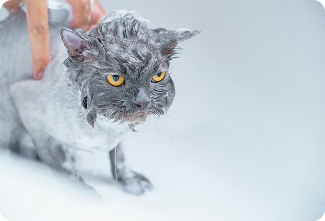
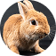

Porque seu pet também merece compartilhar sua história
O Connect Pet é a rede social feita para os pets.Crie o perfil do seu bichinho, compartilhe momentos fofos e divertidos,interaja com outros animais e faça parte de uma comunidade apaixonada por pets.

Perfis Exclusivos para Pets
Crie um espaço único para seu pet, com fotos, biografia, características e muito mais, como se fosse uma rede social só dele.
Compartilhe Momentos Especiais
Publique fotos, vídeos e histórias do dia a dia do seu pet e acompanhe a vida de outros animais na comunidade.
Conexão entre Donos e Pets
Faça amizades, troque experiências e dicas com outros donos apaixonados por seus animais.
Comunidade Segura e Afetiva
Um ambiente pensado para celebrar o amor pelos pets, com foco em interação saudável e positiva.

Compartilhe momentos fofos

Compartilhe passeios

Momentos engraçados
Depoipets

Rex
Adoro ter meu perfil no Connect Pet! Aqui posso mostrar minhas corridas no parque e conhecer outros cães que também amam brincar. Fiz vários novos amigos!
Aventureiro

Mia
Finalmente tenho um espaço só meu! Posso postar minhas fotos dormindo nas caixas e ainda conversar com outros gatos que entendem o quanto isso é importante.
Exploradora

Bolinha
No Connect Pet eu conto sobre minhas aventuras pulando pelo jardim. É tão legal ter uma rede onde nós, pets, somos as estrelas de verdade!
Fofinho